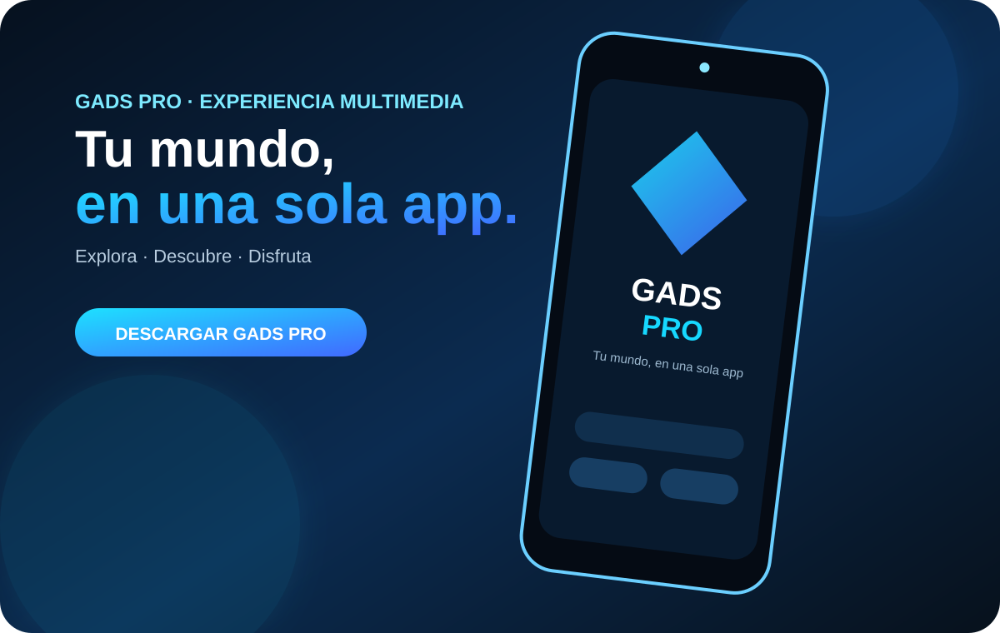
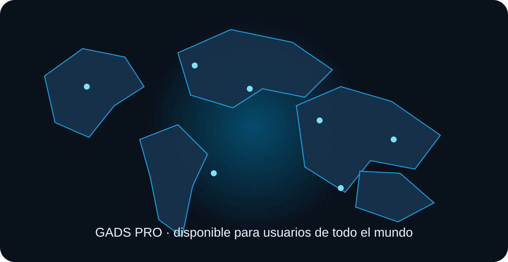
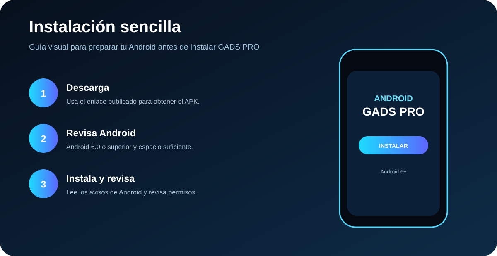
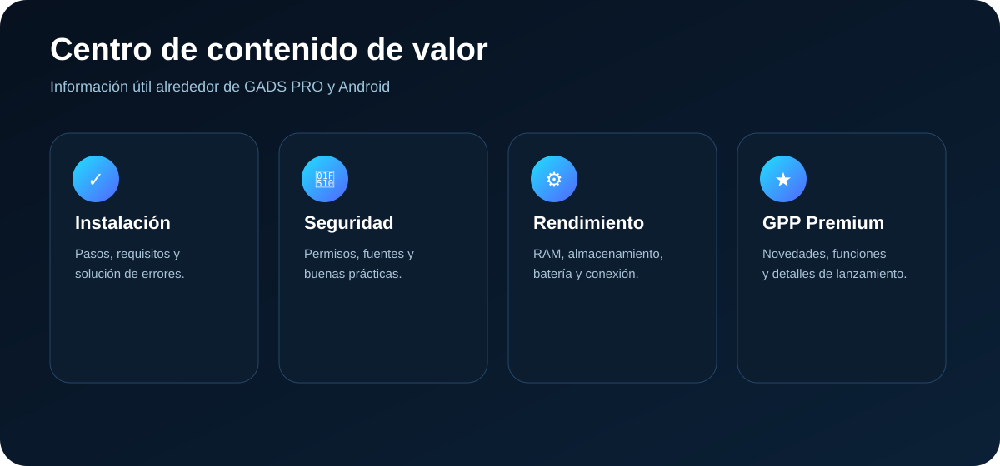

Todo sobre GADS PRO, en un solo lugar.
Conoce la aplicación, instalación, compatibilidad, características, pruebas, seguridad, guías, centro de ayuda, novedades y el proyecto GADS PRO PREMIUM.
Compatibilidad anunciada: Android 6.0 o superior. El rendimiento puede variar según el dispositivo, memoria, almacenamiento, conexión y versión del sistema.

No puedo instalar el APK GADS PRO
Si Android no permite instalar la aplicación, sigue estas comprobaciones antes de volver a intentarlo.
Revisa el archivo
Comprueba que la descarga terminó correctamente y que el archivo corresponde a GADS PRO.
Permisos del sistema
Android puede solicitar autorización para instalar aplicaciones desde una fuente externa. Revisa el aviso que muestra tu dispositivo.
Espacio disponible
Libera almacenamiento si el teléfono indica que no hay espacio suficiente.
Comprueba rápidamente tu dispositivo
Este comprobador es orientativo. La compatibilidad real puede depender de la versión concreta de la aplicación, fabricante, arquitectura y otros componentes del teléfono.
Qué puedes encontrar en GADS PRO
Una presentación clara de la aplicación y de la experiencia que se busca ofrecer al usuario.
Contenido multimedia
Enfocada en ofrecer una experiencia de visualización multimedia.
Experiencia Android
Pensada para diferentes dispositivos compatibles.
Navegación sencilla
Interfaz orientada a facilitar el acceso al contenido.
Proyecto en evolución
Las características pueden cambiar mediante futuras actualizaciones.
Prioriza lo esencial
Conviene cerrar aplicaciones innecesarias y mantener espacio libre.
Equilibrio
Puede ofrecer un buen equilibrio entre rendimiento, batería y almacenamiento.
Más margen
Mayor margen para multitarea y contenido multimedia, según software y conexión.
Revisa el funcionamiento de la aplicación
Una zona de referencia para comprobar los aspectos básicos después de instalar GADS PRO.
01 · Abrir la app
Comprueba que GADS PRO inicia correctamente y que la interfaz se muestra sin errores.
02 · Contenido
Revisa que el contenido multimedia se cargue de acuerdo con tu conexión y configuración.
03 · Reproducción
Si una función no responde, reinicia la app y comprueba primero conexión, permisos y versión instalada.
04 · Rendimiento
Observa consumo de batería, memoria, temperatura y fluidez durante el uso normal.
05 · Actualización
Cuando exista una nueva versión oficial, compara sus cambios antes de actualizar.
06 · Reporte
Para pedir ayuda, conserva el modelo del dispositivo, Android y mensaje de error.
Instala y utiliza la app de forma responsable
La seguridad depende también de la fuente de descarga, los permisos y las decisiones del usuario.
🔐 Fuente de descarga
Utiliza el enlace oficial publicado en esta página y verifica que la dirección sea la esperada.
🛡️ Permisos
Lee los permisos solicitados por Android y evita conceder accesos que no entiendas.
🔄 Actualizaciones
Mantén la aplicación y Android actualizados cuando existan versiones oficiales disponibles.
Conoce visualmente GADS PRO
Capturas disponibles dentro del proyecto para conocer la interfaz antes de utilizar la aplicación.


Mapa de uso y alcance
Referencia visual del alcance internacional del proyecto. No representa cobertura de red ni garantiza disponibilidad de funciones en todos los países.

Una presentación más visual y profesional
Ilustraciones originales para explicar la app, la instalación, el contenido útil y la futura experiencia GPP.


Encuentra una ruta de solución
Selecciona el problema que estás teniendo y GADS PRO te llevará a la sección más útil.
Nuevas aplicaciones en camino
GADS PRO seguirá creciendo. Aquí podrás presentar futuras aplicaciones y proyectos cuando estén listos para publicación.
Próxima aplicación
Proyecto en preparación. Muy pronto podrás conocer su nombre, funciones y enlace oficial.
En desarrolloNuevos proyectos
Esta sección se actualizará conforme se incorporen nuevas aplicaciones al ecosistema GADS PRO.
PróximamenteMantente atento
Consulta las novedades y el sitio oficial para conocer nuevos lanzamientos.
NovedadesGuías y recursos para Android
Contenido útil para instalar, mantener y solucionar problemas habituales.
¿Tienes un problema? Empieza aquí
Utiliza estas rutas para identificar el problema antes de buscar una solución.
📥 No puedo instalar
Ve a la sección de instalación y revisa archivo, permisos, espacio y compatibilidad.
Ver solución📱 ¿Mi teléfono es compatible?
Utiliza el comprobador interactivo de esta página como primera referencia.
ComprobarPreguntas de nuevos usuarios
¿Desde qué versión de Android funciona?
La información del proyecto indica Android 6.0 o superior. La compatibilidad concreta puede variar según el dispositivo y la versión de la aplicación.
¿Funciona en teléfonos de gama baja?
El proyecto está planteado para gama baja, media y alta. El rendimiento puede depender especialmente de RAM, procesador y almacenamiento.
¿Dónde descargo GADS PRO?
El enlace oficial de descarga se encuentra al final de esta página.
¿Qué hago si no puedo instalar el APK?
Revisa la sección “No puedo instalar el APK GADS PRO”, el espacio disponible, los permisos del sistema y la compatibilidad.
¿GADS PRO PREMIUM GPP ya está disponible?
La versión premium se presenta como un proyecto en desarrollo hasta su anuncio oficial.
¿GADS PRO es una aplicación oficial?
Para comprobar la fuente de descarga, utiliza el enlace publicado en la sección oficial de descarga de este sitio y revisa siempre la dirección antes de instalar.
Historial de actualizaciones
Aquí puedes mantener informados a los visitantes sobre los cambios del proyecto.
Nuevas secciones de diagnóstico, compatibilidad, pruebas, seguridad, ayuda, FAQ y novedades.
Se mantiene como proyecto en desarrollo hasta su lanzamiento oficial.
Se añadirán aquí los próximos proyectos del ecosistema GADS PRO.
Comparte tu experiencia con GADS PRO
Un espacio para recibir comentarios de los visitantes. El formulario abre tu aplicación de correo para que el mensaje llegue al contacto oficial.
Busca dentro de esta página
Escribe una palabra como “APK”, “Android”, “Premium”, “seguridad” o “instalación”.
¿Listo para probar GADS PRO?
Has llegado al final. Desde aquí puedes acceder al enlace oficial de GADS PRO y comenzar el proceso de descarga.
🚀 DESCARGAR GADS PROÚnico enlace de descarga · AppCreator24